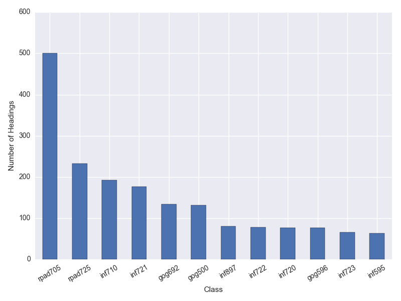
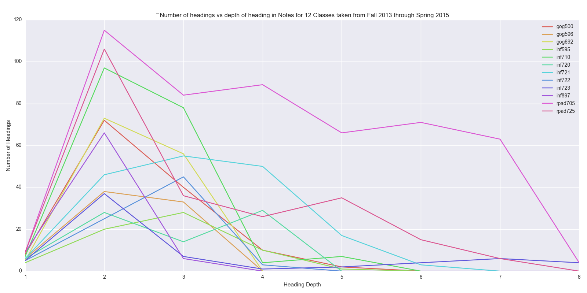

The end of the semester pretty much derailed my momentum when it came to posting in this blog. Luckily I've finished my classes and, with some excitement, I have also finished all my classwork for my PhD. program. This means more work, but less structure, and I am hoping to blog as a way to add structure and writing practice to my day to day.
Good to know, but not the point of this post. With the new 'free time' I have the first thing my mind has turned to is the cruft in my org-mode files. For reasons already mentioned I would like to rework my workflow to be more tag based. File this under exploritory analysis of my workflow. I'm hoping by having a better empirical understanding of how I tag and work, that I will be able to engineer a better personal workflow. Key now that I am 'in the wind' in terms of day to day structure.
Classes
This means looking at tags, headings, heirarchy and filenames. To begin, since begining my PhD program I have kept org files for each individual class as well as several independent org-mode files of dubious utility. I have 12 class org-files including 7 INF (informatics), 3 GOG (geography and planning), and 2 PAD (public administration) classes. These class files generally follow a top level structure including "Notes", "Tasks", "Syllabus", and "Classes" with 23 unique top level headings in the 12 course files. These unique headings are mostly represented by failures to consistently name (e.g., "Assingments", and "Assignments", or "Questions", "Review Questions", "Questions [43/45]") but also unique items that simply were not filed under a separate top level structure (e.g., "Open Gauss-Markov", "PSID Notes", "Final Research Proposal").
In general this structure has served me pretty well. Classes have been maintained as individual headings with one per class (I have found repeating tasks to be error prone). More recently I have maintained Notes under headings with day specific headers using org inactive time stamps. With all this notes are still somewhat sporadic and not well represented across different files.

Interestingly I would say this corresponds quite nicely with my anecdotal ranking of class difficulty, not only in rank, but also (roughly) in proportion. Breaking this down by depth of heading within the org hierarchy we see PAD705 dominates all other classes in terms of the complexity of notes:

Other Org files
Several other files are also included in my work flow. The items of primary interest are personal.org, journal.org, unfiled.org, infphd.org, research.org, publication.org, references.org and several others which are specific and should probably be folded into other files.
- personal.org: Personal has become a dumping ground for projects and notes not directly related to any particular subject. It contains information about Hackathons, Mozilla Science Labs, Open Source Initiative and various fellowships and other things I've looked at over the last couple of years. It is a mishmash of things that could probably be moved into a general 'projects' file.
- journal.org: Currently this keeps a datetree with clocked time. Quite a few of the tags I use appear here in a haphazard way to provide access to the time I spend on things. It is not perfect because I frequently let timers run long and have to guess at how long something has taken me. I'm not sure there is a way around this though. Unfortunately I still have tons of CLOCK statements scattered through my regular files. I have a nice little function that will let me refile them when I run into them. Getting a consistent journal.org file with time on task for the majority of the things I work on is a key priority.
- unfiled.org: This is where capture templates default too, and unfortunately it is completely out of control. There are roughly 500 unfiled notes in this org-file, most of them actually are already complete but have never been properly refiled. Maybe some kind of note, or alert to let me know when I've reached a certain threshold, so I can make it a priority to refile?
- infphd.org: Similar to personal.org this file just contains notes, tasks, and projects related to completing my PhD. It is primarily focused on administrative aspects, but also contains notes and tasks for the 4 pro-seminar classes I have taken. Like personal (and unfiled) Many of these headings could go into a projects file, and then most of the headings could be archived.
- research.org: Similar to infphd.org except with tasks etc related to working with my adviser and on other research projects.
- publication.org: Publication.org is a nice idea that hasn't been very well executed, I would like some way to collect the various presentations, papers and other material that I have accrued over the last two to four years. Ultimately this is about access though, and so maybe the goal should be to maintain this as a set of tags rather than in a separate file?
- references.org: References is an unfortunate situation. I have 146 difference references with notes contained in this file. Ultimately I would like my reference system to integrated with org-mode and my reading lists and everything else, but at the end of the day I have to collaborate with others and this means using at least LibreOffice which means references need to be integrated which, for me at least, means Zotero. Figuring out how to migrate these references faithfully into Zotero and to maintain their notes is important to me. This file represents quite a bit of work (both reading and writing) and maintaining a connection between notes and zotero is still an unsolved problem for my workflow.
Concluding Thoughts
Classes simply won't be as important moving forward. Ensuring that these are properly arranged should probably be a relatively low priority. Part of the reason I am doing this to begin with is because the context in which I do my work is about to change, and so this provides an opportunity to develop an improved workflow around this new context.
I am thinking primarily about sets of theme related tags. I would like to have less org-files and be more aggressive about archiving content that is no longer relevant. Key things moving forward will be cataloging and providing access to projects (programming, etc) and publications (writing, presentations, etc). I would like to improve capture templates to help prevent unfiled.org from becoming so unwieldy. The references/zotero thing needs to be worked out. Finally I would like to complete the migration of time entries into journal.org, though its not clear that this is even the best way to maintain my time on task entries.